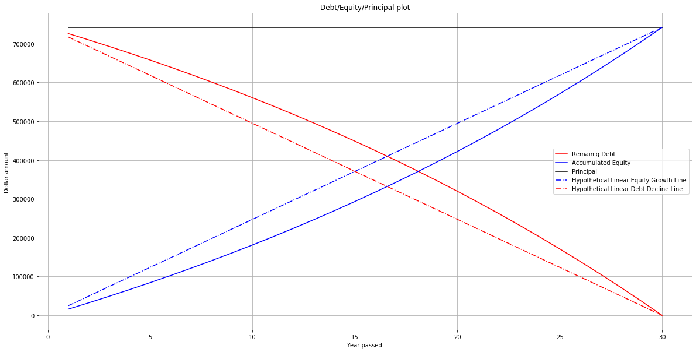
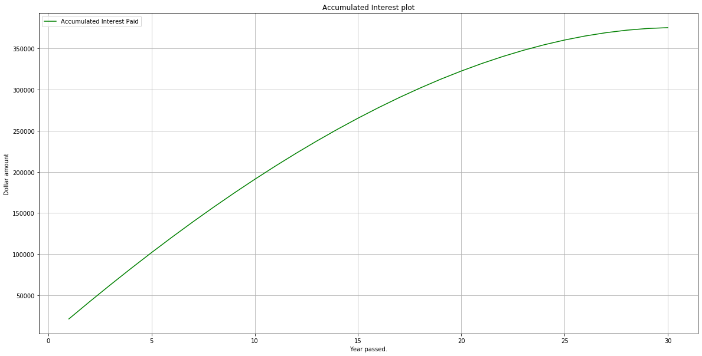
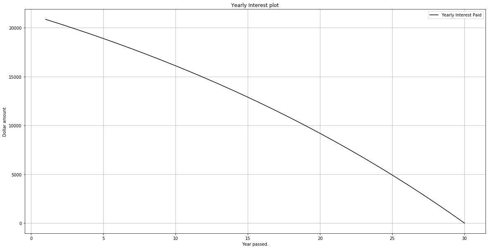

Understanding Fixed Mortgage Loans
In this post, I will explain the fundamentals behind fixed-rate mortgage loans which could give insights on some financial decisions. Asstme that we have a fixed-rate mortgage loan of principal amount $P$ with yearly interest rate $r$ that amortizes in $T$ years. Further, denote the total monthly payment coupons for this loan by $C_m$ and the total yearly payment coupons by $C_y$. Since we assume that the loan is not a negative amortization loan, its total yearly coupon payment should be higher than its interest to reduce the loan balance over time. Hence, $C_y > rP \Rightarrow C_y - rP > 0$. Notice that
\[C_y = 12 C_m\]The total amount paid by the mortgagor or borrower at the end of $n$-th year is
\[C_n = n C_y\]We can easily prove that the remaining mortgator debt at the end of $n$-th year is
\[D_n = P(1+r)^n - C_y \frac{(1+r)^n-1}{r} = \frac{1}{r} \left( C_y - (C_y-rP)(1+r)^n \right)\]The accumulated equity of the mortgagor or the borrower at the end of $n$-th year is
\[E_n = \left(C_y - r P \right) \frac{(1+r)^n-1}{r}\]The borrower’s yearly interest paid at the end of year $n$ is
\[I_n = r P \left(1+ r \right)^{n-1} - C_y \left((1+r)^{n-1}-1 \right) = C_y - (C_y -r P)(1+r)^{n-1}\]and the total interest paid by the borrower at the end of year $n$ is
\[T_n = n C_y - \left(C_y - r P \right) \frac{(1+r)^n-1}{r}\]Further, notice that
\[C_n = n C_y = T_n + E_n\]and
\[P = D_n + E_n\]Now, as a case study, consider a 30 year fixed rate mortgage with an interest rate of 2.875 which is not difficult to secure these days. For now ignore tax, insurance, maintenance and other costs. Assume that the loan value is $741750 (i.e. the conforming loan value limit for King county). The yearly coupon value is calculated as
\[C_y = P \frac{r(1+r)^T}{(1+r)^T-1} = 741750 \frac{0.02875 (1.02875^{30})}{1.02875^{30} -1} = \$37234.63\]Roughly speaking, the monthly coupon will be equal to \(\$37234.63 /12 = \$3102.89\).
P = 741750
r = 0.02875
T = 30
Cy = P*r*((1+r)**T)/((1+r)**T - 1)
Cm = Cy/12
import matplotlib.pyplot as plt
years = [i for i in range(1, T+1)]
debt = [P*(1+r)**i - Cy *((1+r)**i-1)/r for i in range(1, T+1)]
equity = [(Cy - r*P)*((1+r)**i-1)/r for i in range(1, T+1)]
yearly_interest = [Cy - (Cy-r*P)*((1+r)**i) for i in range(1, T+1)]
total_interest = [i*Cy - (Cy - r*P)*((1+r)**i-1)/r for i in range(1, T+1)]
principal = [P for i in range(1, T+1)]
linear_equity_growth_line = [P/T*i for i in range(1, T+1)]
linear_debt_decline_line = [P - P/T*i for i in range(1, T+1)]
plt.figure(figsize=(20,10))
plt.plot(years, debt, '-r', label = "Remainig Debt")
plt.plot(years, equity, '-b', label = "Accumulated Equity")
plt.plot(years, principal, '-k', label = "Principal")
plt.plot(years, linear_equity_growth_line, '-.b', label = "Hypothetical Linear Equity Growth Line")
plt.plot(years, linear_debt_decline_line, '-.r', label = "Hypothetical Linear Debt Decline Line")
plt.xlabel('Year passed.')
plt.ylabel('Dollar amount')
plt.title('Debt/Equity/Principal plot')
plt.grid(True)
plt.legend()
plt.show()
plt.figure(figsize=(20,10))
plt.plot(years, total_interest, '-g', label = "Accumulated Interest Paid")
plt.xlabel('Year passed.')
plt.ylabel('Dollar amount')
plt.title('Accumulated Interest plot')
plt.grid(True)
plt.legend(loc = "upper left")
plt.show()
plt.figure(figsize=(20,10))
plt.plot(years, yearly_interest, '-k', label = "Yearly Interest Paid")
plt.xlabel('Year passed.')
plt.ylabel('Dollar amount')
plt.title('Yearly Interest plot')
plt.grid(True)
plt.legend(loc = "upper right")
plt.show()